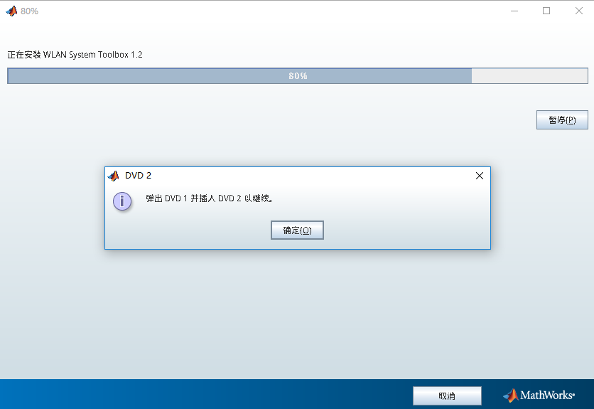

Matlab 安装指南
本节介绍如何在 Linux 操作系统中安装 Matlab。
以 Matlab 2016b Linux64 版本为例，安装文件包括：
R2016b_glnxa64_dvd1.isoR2016b_glnxa64_dvd2.iso
挂载 DVD1
$ sudo mkdir /media/mathworks -p
$ sudo mount -t iso9660 -o loop R2016b_glnxa64_dvd1.iso /media/mathworks
$ sudo mkdir /opt/MATLAB/R2016b
$ sudo chmod 777 /opt/MATLAB/R2016b -R
启动安装程序
$ /media/mathworks/install
启动安装程序，注意安装位置选择 /opt/MATLAB/R2016b。
挂载 DVD2
出现如下界面时

输入
$ sudo umount /media/mathworks
$ sudo mount -t iso9660 -o loop R2016b_glnxa64_dvd2.iso /media/mathworks
卸载 DVD1，挂载 DVD2，回到安装界面继续安装。